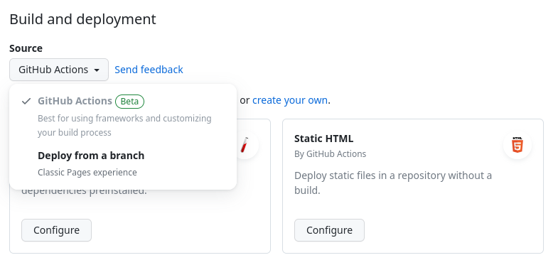

GitHub Pages and Actions#
Once your content is on GitHub, you can easily host it as a GitHub Pages website. This is a service where GitHub hosts your static files as if they were a standalone website. The quickest way to get started with Jupyter Book on GitHub Pages is to use GitHub Actions to deploy the built HTML files.
GitHub Actions is a tool that allows you to automate things on GitHub. It is used for a variety of things, such as testing, publishing packages and continuous integration.
Note that if you’re not hosting your book on GitHub, or if you’d like another, user-friendly service to build it automatically, see the guide to publishing your book on Netlify.
Note
You should be familiar with GitHub Actions before using them to automatically host your Jupyter Books. See the GitHub Actions documentation for more information.
To build your book with GitHub Actions, you’ll first need to enable GitHub pages for your project. The GitHub Pages settings for a repository can be found at Settings -> Pages, where Source should be set to GitHub Actions.

Next, you’ll need to setup a workflow that does the following things:
Activates when a push event happens on
master(or whichever) branch has your latest book content.Installs Jupyter Book and any dependencies needed to build your book.
Builds your book’s HTML.
Uses the
actions/deploy-pagesaction to upload that HTML to GitHub Pages.
:::{tip} You can use the Jupyter Book cookiecutter to quickly create a book template that already includes the GitHub Actions workflow file needed to automatically deploy your book to GitHub Pages:
jupyter-book create --cookiecutter mybookpath/
For more help, see the Jupyter Book cookiecutter GitHub repository, or run:
jupyter-book create --help
:::
Here is a simple YAML configuration for a Github Action that will publish a Jupyter Book found in the root of the GitHub repository to GitHub Pages:
name: deploy-book
# Run this when the master or main branch changes
on:
push:
branches:
- master
- main
# If your git repository has the Jupyter Book within some-subfolder next to
# unrelated files, you can make this run only if a file within that specific
# folder has been modified.
#
# paths:
# - some-subfolder/**
# This job installs dependencies, builds the book, and pushes it to `gh-pages`
jobs:
deploy-book:
runs-on: ubuntu-latest
permissions:
pages: write
id-token: write
steps:
- uses: actions/checkout@v3
# Install dependencies
- name: Set up Python 3.11
uses: actions/setup-python@v4
with:
python-version: 3.11
- name: Install dependencies
run: |
pip install -r requirements.txt
# (optional) Cache your executed notebooks between runs
# if you have config:
# execute:
# execute_notebooks: cache
- name: cache executed notebooks
uses: actions/cache@v3
with:
path: _build/.jupyter_cache
key: jupyter-book-cache-${{ hashFiles('requirements.txt') }}
# Build the book
- name: Build the book
run: |
jupyter-book build .
# Upload the book's HTML as an artifact
- name: Upload artifact
uses: actions/upload-pages-artifact@v2
with:
path: "_build/html"
# Deploy the book's HTML to GitHub Pages
- name: Deploy to GitHub Pages
id: deployment
uses: actions/deploy-pages@v2
For more information on GitHub Pages, such as configuring custom domains, visit the GitHub Pages documentation.